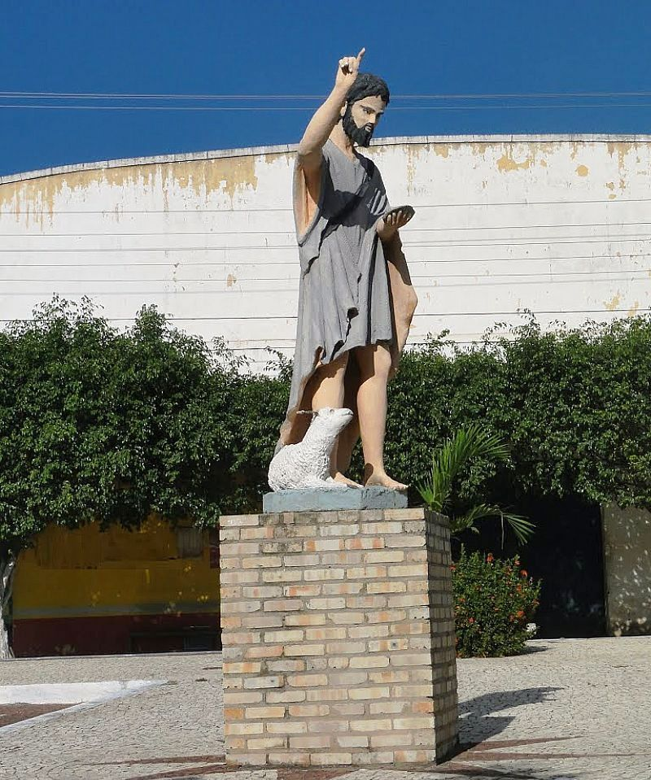

Geoinfos
Informações técnicas sobre relevo, população, IDH etc.
| INFORMAÇÕES | |
|---|---|
| Municípios limítrofes | Barreira, Redenção e Aracoiaba |
| Fundação | 15 de abril de 1987 (34 anos) |
| Área total | 155,188 km² |
| Clima | Tropical subúmido quente | IDH | 0,623 — médio |
| PIB | R$ 115.541 mil |
| INFORMAÇÕES TERRITORIAIS | |
|---|---|
| Número de habitantes | 16.639 habitantes |
| Superfície de Acarape |
16 030 hectares
160,30 km² (61,89 sq mi) |
| Densidade populacional | 107,2 hab./km² |
| Altitude de Acarape | 95 metros de altitude |
| Coordenadas geográficas decimais |
Latitude:
-4.22654
Longitude: -38.7077 |
| Coordenadas geográficas sexagesimais | Latitude: 4° 13' 36'' Sul , Longitude: 38° 42' 28'' Oeste |
| INFORMAÇÕES DO MUNICÍPIO | |
|---|---|
| Endereço da Prefeitura Municipal de Acarape |
Acarape
Prefeitura de Acarape
Rua José Guilherme, S/N ACARAPE - CE, 62785-000 Brasil Work +55 85 3373-1467 Fax Não disponível |
| Telefone da prefeitura |
(85) 3373-1467
Internacional: +55 85 3373-1467 |
| Fax |
Não disponível
Não disponível |
| Endereço eletrônico da prefeitura |
Não disponível
|
| Site oficial do município | acarape.ce.gov.br |
| INFORMAÇÕES DO ADMINISTRATIVAS | ||
|---|---|---|
| Prefeito de Acarape | FRANCISCO EDILBERTO BESERRA BARROSO | |
| Partido politico | PDT | |
| INFORMAÇÕES DE TRANSPORTE | |
|---|---|
| Transporte urbano disponível | - |
| Aeroporto |
Aeroporto Internacional Pinto Martins
53.8 km
Aeroporto de Sobral
190.9 km
Aeroporto Dix-Sept Rosado
184.4 km
|
| INFORMAÇÕES DE DISTÂNCIA A OUTRAS CIDADES | ||
|---|---|---|
| São Paulo : 2314 km | Rio de Janeiro : 2135 km | Brasília : 1635 km |
| Salvador : 974 km | Belo Horizonte : 1826 km | Manaus : 2371 km |
| Curitiba : 2616 km | Fortaleza : 59 km mais perto | Goiânia : 1803 km |
| Belém : 1132 km | Porto Alegre : 3160 km | Guarulhos : 2292 km |
| Campinas : 2266 km | São Luís : 650 km | Manaus : 2371 km |
| Distância calculada em linha reta! | ||
Fonte: Wikipedia e Cidade Brasil
História
Conheça mais sobre a história de Acarape.
Formação administrativa
Em 1868, Acarape foi elevado a categoria de vila, sendo desmembrado de Baturité, mas só foi instalado em 1841. Depois o distrito de Cala Boca torna-se o primeiro distrito de Acarape. Em 1933, Acarape é rebaixado a distrito de Redenção. Em 1963, Acarape se emancipa de Redenção,tornando-se município, e anexa o ex-distrito de Redenção, agora distrito de Acarape: Barreira, chamada antes de Barreira Vermelha. Em 1965, Acarape é rebaixado novamente a distrito de Redenção. Em 1987, Acarape se emancipa de Redenção, tornando-se de novo município. Atualmente, Acarape só possui o distrito-sede.
Acarape(distrito-sede)
As terras da região entre os sopés do Maciço de Baturité e a serra do Cantagalo; ao redor das margens do Rio Acarape/Rio Pacoti eram habitada por diversas etnias como os Potyguara, Jenipapo, Kanindé, Choró e Quesito, recebeu a partir do século XVII diversas expedições militares e religiosas. Com a implementação da pecuária no Ceará no século XVIII, nas terras de Acarape também foram beneficiadas com a agricultura da cana-de-açúcar devido a fertilidade do solo e abundância de água.
Neste contexto surgiu a localidade de Calaboca da Vila de Redenção, que definiu-se como centro urbano com a construção da Companhia Cearense da Via Férrea de Baturité S.A. Com a prosperação do comércio, da agricultura da cana de açúcar e abastança de água, foram criados engenhos e alambiques no município, no qual vieram trabalhar escravos africanos.
Em 1879 foi construído um estação de trem em Calaboca e com isto todos os comerciantes de Redenção, mudaram seus estabelecimentos para Calaboca. Em 26 de outubro de 1879, Calaboca desmembrou-se de Redenção e passou a ser um distrito deste município. Em honra as origens Calaboca passou a chamar-se Acarape em 18 de setembro de 1926. A igreja-matriz de São João Batista, padroeiro do município, foi construída em 1946.
Pontos Turísticos
Saiba mais sobre os melhores lugares e o que fazer em Acarape.
Antiga Estação Ferroviária

Igreja Matriz São João Batista
Monumento à São João Batista

Salão Paroquial de Acarape
Como Chegar?
Veja como chegar nos melhores pontos de Acarape.